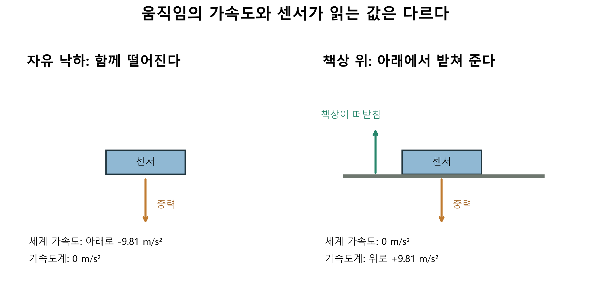
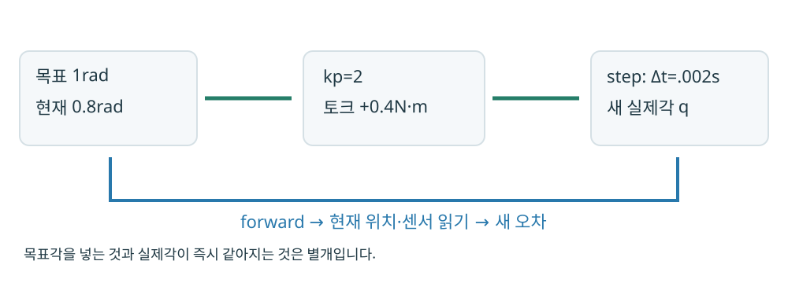

컵을 집어 다른 자리로 옮기는 일을 처음부터 끝까지 해 봅니다. 컵이 어디 있는지 보고(기하), 팔을 어떻게 구부릴지 정하고(역기구학), 모터에 목표를 주고(제어), 손이 컵에 닿았는지 확인합니다(접촉·센서). 이번 차시는 새 개념을 더하지 않고, 지난 두 차시의 부품을 하나의 고리로 이어 붙입니다.
이 장면에서 고정한 조건
그래서 순서가 중요합니다. 목표 손끝 위치, 관절 목표, 힘 명령, 현재 상태, 센서 값은 서로 다른 숫자입니다. 이 다섯을 구분해 두면, 어디서 틀렸는지 스스로 찾을 수 있습니다.
가만히 놓인 휴대폰의 가속도계

숫자·공식·코드로 이어 보기
앞 차시에서 가속도계가 재는 것이 무엇인지 확인했습니다. 같은 장면을 문제로 한 번 더 붙잡아 둡니다. 책상 위에 가만히 놓인 휴대폰의 원시 가속도계는 위쪽으로 얼마를 읽을까요? 센서의 위쪽 축을 +방향으로 두었다고 가정합니다.
- 0m/s², 움직이지 않으니까
- −9.8m/s², 중력이 아래로니까
- +9.8m/s², 책상이 떠받치니까
- 떨어질 때와 같은 값
정답과 오답을 함께 이해하기
다, 약 +9.8m/s². 위치가 변하지 않는다는 뜻의 세계 가속도 0과, 센서가 읽는 고유가속도는 다른 값입니다. 책상이 아래로 떨어지지 않게 떠받치는 효과를 센서가 읽습니다.
가: 세계 운동 가속도와 혼동한 경우입니다. 나: 중력의 방향만 보고 부호를 정한 경우입니다. 라: 이상적인 자유 낙하 센서는 0이므로 정지 상태와 다릅니다. 휴대폰 앱이 중력을 제거해 보여 주는 “선형 가속도”는 이 원시 센서 질문과 구분해야 합니다.
이 문제가 중요한 이유는 숫자 하나를 맞히는 데 있지 않습니다. 어느 좌표계의, 무엇을 뺀 값인지를 말할 수 있어야 로봇이 기울었을 때 같은 값을 옳게 해석합니다.
제어와 감각을 연결해 한 장면 읽기

숫자·공식·코드로 이어 보기
위치 목표를 준다 → 액추에이터가 힘을 만든다 → 몸체가 움직인다 → 접촉력이 생긴다 → 센서와 위치를 읽는다. 이 고리를 이해하면 코드를 줄 단위로 외우지 않아도 각 줄이 왜 필요한지 설명할 수 있습니다.
| 개념 | 기억할 질문 |
|---|---|
| 액추에이터 | 이 ctrl은 토크, 각도, 속도 중 무엇인가? |
| position | kp와 감쇠가 충분한가? 중력에 처지는가? |
| 센서 | 어느 물체·좌표계·단위의 값을 읽는가? |
| 접촉 | 어떤 geom끼리 닿았고, 지금 읽는 값의 시점은 언제인가? |
| 안정성 | 큰 숫자가 실제 운동인가, 계산 폭주인가? |
| 목표 자세 | 끝점뿐 아니라 중간 경로와 충돌도 맞는가? |
이 질문들을 앞의 실험에 그대로 대 보겠습니다. “목표에 정확히 간다”는 예제의 0.0mm는 출력이 반올림된 관찰입니다. 다른 중력·제어·접촉 조건에서도 항상 오차 0을 보장하는 법칙이 아닙니다. “충격이 25배”도 그 상자 낙하 장면의 수치입니다. 수치를 법칙으로 승격시키지 않는 것이 이 장의 태도입니다.
종합 확인: 목표에 도착했는데 상자 밀기에 실패했다면?
교안이 따로 지정한 읽기 과제는 자이로 값을 쌓아 자세를 추정하기(4.7절), 실제 시간보다 시뮬레이션이 몇 배 빠른지 측정하기(4.9절)입니다. 다음 장에서는 하나의 프로그램 안에 있던 기능을 여러 프로그램 조각으로 나누는 ROS 2를 배웁니다.
2일차 전체를 하나의 흐름으로
기구학은 주로 “어디에 있나, 어디로 움직이나”를 다루고, 동역학 시뮬레이션은 “힘 때문에 시간이 지나며 어떻게 움직이나”를 더합니다. 둘을 나란히 놓고 비교해야 모델과 계산을 서로 검산할 수 있습니다.
숫자·공식·코드로 이어 보기
첫 두 상자는 같은0.4·0.3m팔을 양방향으로 읽습니다. q=(0°,90°)를 FK에 넣으면 p=(0.4,0.3)m, 이 p를 IK에 넣으면 원래 q를 포함한 후보가 나옵니다. 다음 J는 그 자세 근처의 작은 변화, MuJoCo는 같은 구조에 힘·시간을 더한 변화를 계산합니다. 화살표는 처리 순서이며 손끝이 그리는 경로가 아닙니다.
- 순기구학: 관절값을 알고 손끝 위치·방향을 구합니다. 부모에서 자식으로 고정 변환과 관절 변환을 차례로 곱합니다.
- 2링크 역기구학: 손끝 목표에서 관절각을 찾습니다. 코사인 법칙으로 풀며 두 자세, 하나의 경계 자세, 닿지 않는 목표가 생길 수 있습니다. 관절 제한까지 검사합니다.
- 야코비안: 관절을 조금 움직일 때 손끝이 어떻게 움직이는지 연결합니다. 속도와 작은 수정량을 다루는 데 씁니다.
- 수치 역기구학·DLS: 목표까지 작은 수정을 반복합니다. 특이점 근처의 과도한 관절 변화를 완화하되, 오차·수렴·제약을 함께 확인합니다.
- MuJoCo: 구조에 질량·힘·접촉·시간을 더해 움직임을 계산합니다. 액추에이터 목표와 센서를 연결해 상자 밀기를 관찰합니다.
마지막 자가 점검: 이 다섯 문장을 쉬운 말로 설명할 수 있을까?
- 부모가 움직이면 연결된 자손의 세계 자세가 바뀐다.
- 관절각으로 손끝을 찾는 것과 손끝 목표로 관절각을 찾는 것은 반대 문제다.
- 큰 관절 속도 없이 만들기 어려운 손끝 방향이 있다.
- step은 시간 진행, forward는 현재 상태 계산이다.
- 목표에 도착하는 것과 안전한 경로로 작업을 끝내는 것은 다르다.
막히는 문장이 있으면 그 주제로 돌아가 그림과 작은 예를 다시 보십시오. 수식을 통째로 외우는 것보다 입력·출력·단위를 말할 수 있는지가 먼저입니다.
다음 3일차의 예고는 ROS 2의 노드, 토픽, QoS, 서비스, 파라미터, 액션, launch와 점 로봇 실습입니다. 이는 내일 범위이며 2일차에서 이미 실습했다는 뜻이 아닙니다. 책 3장·4장 전체가 복습 범위이고, 기본값/재질·대화형 뷰어·자이로 적분·속도 측정은 교안이 별도로 지정한 읽기 과제입니다.
따라 해 보기 (선택): 순서와 성공 조건
본문의 고리를 실제 코드 순서로 세워 보는 문제입니다. 각 단계에서 오가는 값의 단위가 무엇인지 함께 말해 보십시오.
두 번째는 실패를 진단하는 문제입니다. 어느 단계까지는 확인했고 어디부터 확인하지 않았는지 나눠 보는 것이 요점입니다.
마지막으로 “나는 어느 단계까지 확인했고, 어디부터 아직 모른다”를 한 줄로 적어 두십시오. 모르는 부분을 정확히 찾는 것도 학습 결과입니다.
수업 근거/원문 보기
p66 문제는 교안 슬라이드의 확인 문제이고, p67~68의 정리는 4.10~4.11절을 하나의 흐름으로 다시 쓴 것입니다. 다음 날 범위는 아직 다루지 않았습니다.
- 교안 10차시: 66쪽 · 67쪽 · 68쪽
- 교과서: PDF 192쪽 · PDF 201쪽 · 4.10~4.11절 원고
- 2일차 전체 연결은 3장 기구학 원고와 4장 원고를 함께 봅니다.